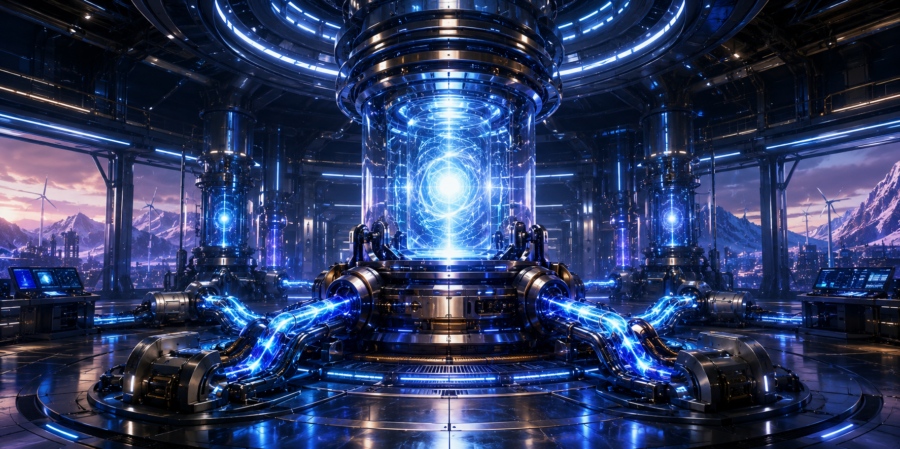

Exploratory energy modelling
Early-stage research direction.
Division
SymCore Energy is the proposed energy division. Its role is to explore future energy concepts, distributed infrastructure ideas and speculative field-system models with strong safety and governance boundaries.

Early-stage research direction.
Early-stage research direction.
Early-stage research direction.
SymCore Energy is currently a proposed research division within an early-stage concept. It is not yet an operating company, laboratory or funded research team.